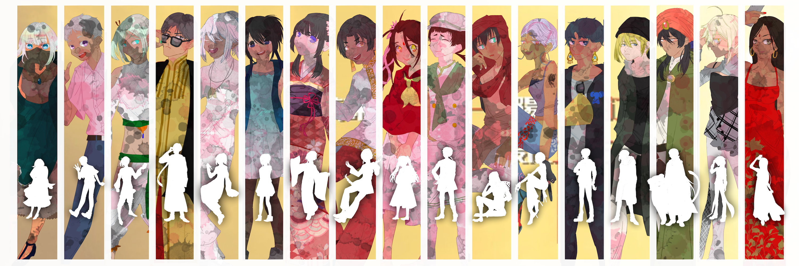
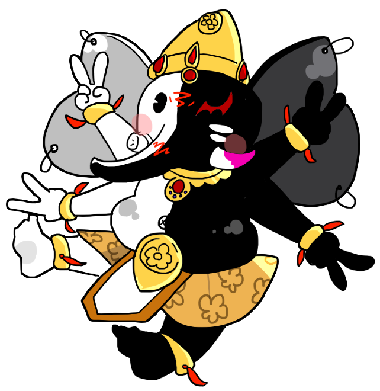

キャラクター
企画概要
入学案内
マップ
素材
OP/交流期間
プレ
1章
2章
3章
IF期間
4章
5章
最終裁判
絵本

こちらは印度論破公式HPになります
Twitter企画ですのでこちらを確認することは必須ではありません
このサイトは企画を楽しむためのおまけ的要素としてお使いください

予定表
今後の予定
印度論破スタッフ（敬称略）
主催
企画進行&ダンス 特に記載のないものはだいたい主催が作ってます
どこかのインド人
スチル班
各種スチルやイラスト素材の作成&ダンス 企画を豪華にしてくれる最高のフレンズ
ツナナマヨ, ヒラガナ, 樽田はぎれ。, しゃけ, 煮魚, えむこ
助っ人
主催がやばい時に助けてくれる&ダンス 主催の壁打ち兼保険です
主催の友人N, 主催の友人H
Tweets by IndiaRonpa
ここに謎の一行を入れないとスタイルが崩れるのなんで
आशा की चोटी कैंपस